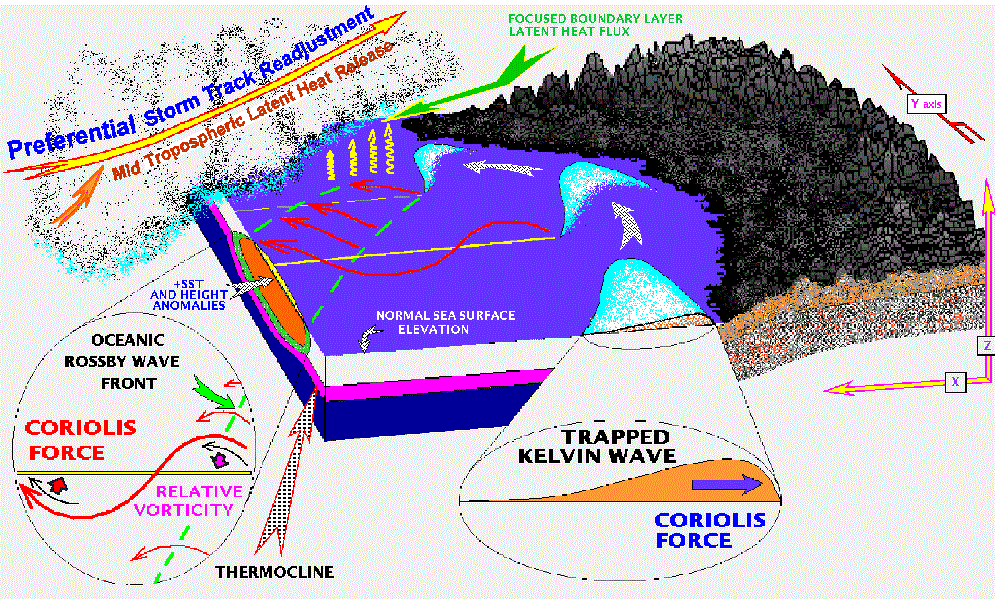

Rossby Wave
In the ocean, however, their wavelengths are only about 100 km. Rossby-wave frequencies obey the inequality $\omega \ll f$. Because of this slowness, the time derivative terms are an order of magnitude smaller than the Coriolis acceleration and the pressure gradients in the horizontal equations of motion.
Such nearly geostrophic flows are called quasi-geostrophic motions.

◀
▶